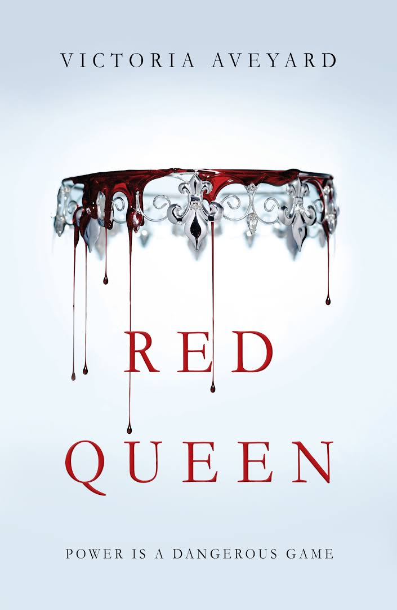

Review On Novels
The Fault in our Stars
Despite the tumor-shrinking medical miracle that has bought her a few years, Hazel has never been anything but terminal, her final chapter inscribed upon diagnosis. But when a gorgeous plot twist named Augustus Waters suddenly appears at Cancer Kid Support Group, Hazel's story is about to be completely rewritten.
All the Bright Places

When Finch and Violet meet on the ledge of the bell tower at school, it’s unclear who saves whom. And when they pair up on a project to discover the “natural wonders” of their state, both Finch and Violet make more important discoveries: It’s only with Violet that Finch can be himself—a weird, funny, live-out-loud guy who’s not such a freak after all. And it’s only with Finch that Violet can forget to count away the days and start living them. But as Violet’s world grows, Finch’s begins to shrink. This is an intense, gripping novel perfect for fans of Jay Asher, Rainbow Rowell, John Green, Gayle Forman, and Jenny Downham from a talented new voice in YA, Jennifer Niven
Me Before You

Louisa Clark is an ordinary young woman living an exceedingly ordinary life—steady boyfriend, close family—who has never been farther afield than their tiny village. She takes a badly needed job working for ex-Master of the Universe Will Traynor, who is wheelchair-bound after an accident. Will has always lived a huge life—big deals, extreme sports, worldwide travel—and now he’s pretty sure he cannot live the way he is. Will is acerbic, moody, bossy—but Lou refuses to treat him with kid gloves, and soon his happiness means more to her than she expected. When she learns that Will has shocking plans of his own, she sets out to show him that life is still worth living. A love story for this generation, Me Before You brings to life two people who couldn’t have less in common—a heartbreakingly romantic novel that asks, What do you do when making the person you love happy also means breaking your own heart?
Still Me
Louisa Clark arrives in New York ready to start a new life, confident that she can embrace this new adventure and keep her relationship with Ambulance Sam alive across several thousand miles. She steps into the world of the superrich, working for Leonard Gopnik and his much younger second wife, Agnes. Lou is determined to get the most out of the experience and throws herself into her new job and New York life. As she begins to mix in New York high society, Lou meets Joshua Ryan, a man who brings with him a whisper of her past. Before long, Lou finds herself torn between Fifth Avenue where she works and the treasure-filled vintage clothing store where she actually feels at home. And when matters come to a head, she has to ask herself: Who is Louisa Clark? And how do you reconcile a heart that lives in two places?Funny, romantic, and poignant, Still Me follows Lou as she navigates how to stay true to herself, while pushing to live boldly in her brave new world.
Red Queen
This is a world divided by blood - red or silver. The Reds are commoners, ruled by a Silver elite in possession of god-like superpowers. And to Mare Barrow, a seventeen-year-old Red girl from the poverty-stricken Stilts, it seems like nothing will ever change. That is until she finds herself working in the Silver Palace. Here, surrounded by the people she hates the most, Mare discovers that, despite her red blood, she possesses a deadly power of her own. One that threatens to destroy the balance of power. Fearful of Mare's potential, the Silvers hide her in plain view, declaring her a long-lost Silver princess, now engaged to a Silver prince. Despite knowing that one misstep would mean her death, Mare works silently to help the Red Guard, a militant resistance group, and bring down the Silver regime. But this is a world of betrayal and lies, and Mare has entered a dangerous dance - Reds against Silvers, prince against prince, and Mare against her own heart.
The Forty Rules of Love

Ella Rubenstein is forty years old and unhappily married when she takes a job as a reader for a literary agent - and suddenly her life is transformed. Her first assignment is to read a novel about the ancient Sufi mystic, Rumi, who was transformed by the whirling dervish into a passionate poet and advocate of love. Slowly she realizes that his thirteenth-century life is starting to mirror her own, and in doing so it opens up exciting opportunities for her to embrace the dervish's timeless message for herself. This is a mesmerizing novel about finding love and inspiration in the most unlikely of places
Never Let Me Go
Friends Kathy (Carey Mulligan), Tommy (Andrew Garfield) and Ruth (Keira Knightley) grow up together at a seemingly idyllic boarding school in the English countryside. When they leave the school and the horrible truth of their true purpose is revealed to them, they must simultaneously confront deep-seated feelings of love, jealousy and betrayal that threaten to tear their friendship asunder.